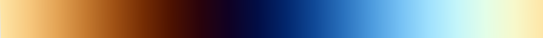
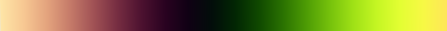
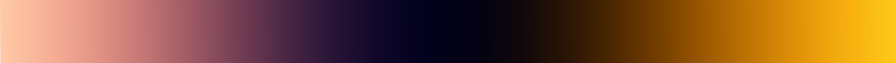
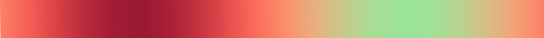
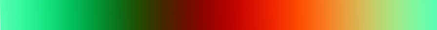

Color Palette Configurator HDA¶
The Color Palette Configurator makes it easy to customize Houdini's node colors. I created this tool to make network organization more flexible and visually appealing.
Table of Contents¶
- Overview
- Getting Started
- Features
- Main Color List
- Gradient Generator
- Text-Based Colors
- Exporting Colors
- Troubleshooting
- Colors Not Updating
- Colors Look Different
- Need Help?
Overview¶
By default, Houdini gives you 36 colors in the network palette. This tool lets you: - Modify these colors - Create new color schemes - Generate color gradients - Import and export palettes
Getting Started¶
- Find the tool in: OBJ/SOP Tab Menu → Node Weaver → Color Palette Configurator
- The interface shows:
- Location of default Houdini color palette file
- Import/export options
- Main colors list tab
- Gradient generator control tab
- Text-based palette tab
Features¶
Main Color List¶
The main colors list determines what gets imported from files or exported to them: - Click any color to edit - Colors appear in the network view color picker (C key) in order, left to right, top to bottom - The "Color Palette File" parameter controls: - Where colors save when using "Save Colors to File" - Where colors load from when using "Populate Colors from File" - Default location matches Houdini's manual color palette save location
Gradient Generator¶
Step 1: Creating Gradients¶
There are three ways to generate gradients:
- Manual Entry
-
Set values directly as you would in other Houdini gradients
-
Screen Sampling
- Click and drag anywhere on screen to sample colors
-
Useful for sampling from images or satellite map data
-
Cosine Formula (credit: Inigo Quilez)
- Creates smooth, pleasing gradients
- Parameters:
- Brightness, Contrast, Frequency, and Offset
- Each has R, G, and B values
- Parameters control how each color channel cycles through the cosine wave
Example Cosine Parameter Effects¶
Examples using only the Red channel:
-
Brightness 0.5, Contrast 0.5, Frequency 1, Offset 0:
-
Brightness 0.5, Contrast 1, Frequency 2, Offset 0:
-
Brightness 0, Contrast 0.25, Frequency 1.5, Offset -0.25:
Built-in Presets¶
The tool includes several presets:
-
Infrared
-
Earth/Ice 
-
Aqua, Black, Red, White, Aqua
-
Flower Blossom 
-
Cosmic 
-
Neon

-
Peach, Crimson, Peach, Aqua, Peach 
-
Watermelon 
-
Blueberry
Step 2: Using Gradient Samples¶
To add gradient colors to your palette:
- Set "Number of Samples" and click "Create Samples From Gradient"
- Review generated colors in the multiparm below
- Colors aren't added to Main Color List yet
- Adjust, remove, or add colors as needed
- Click "Add Gradient Samples to Main Color List"
- "Delete From Here After": Clears samples after adding
- "Add to Top": Places colors at start of list instead of end
Text-Based Colors¶
Import colors from: - Hex codes - Adobe Color CSS format (from color.adobe.com)
Options: - Add directly to Main Color List - Generate gradient from colors (evenly spaced)
Exporting Colors¶
- Save Colors to File: Saves to the location specified in "Color Palette File" parameter
- Must end in
/config/opColorPalette.def - Must save in either:
- Houdini preferences folder (default)
- Custom Houdini tools folder
- Palette update takes effect after Houdini restart
Sharing Palettes¶
- If you want to share your palette with anyone, give them the
opColorPalette.deffile. - Same file location requirements apply if the colors are to appear in their Houdini installation.
- If you want to package an
opColorPalette.deffile in your own package, put it in an optional folder in case your users already have a color palette they want to keep.
Troubleshooting¶
Colors Not Updating¶
File Location Issues:
- File must be named opColorPalette.def
- Must be in a /config folder
- Base folder must be in either:
- Houdini preferences folder (default)
- Custom Houdini tools folder
Example paths:
Windows: C:/Users/YourUsername/Documents/HoudiniTools/NodeWeaver/config/opColorPalette.def
Mac: /Users/YourUsername/Documents/HoudiniTools/NodeWeaver/config/opColorPalette.def
Linux: /home/YourUsername/HoudiniTools/NodeWeaver/config/opColorPalette.def
Multiple Files:
- Having opColorPalette.def in external packages overrides preferences folder
- Either update external file or delete it
After Changes: - Restart Houdini to rescan folders
Colors Look Different¶
- In Color Editor window, disable "Enable Color Correction" in top bar (looks like greyscale ramp)
Need Help?¶
If you run into issues: 1. Check if restarting Houdini helps 2. Look through existing issues 3. Open a new issue